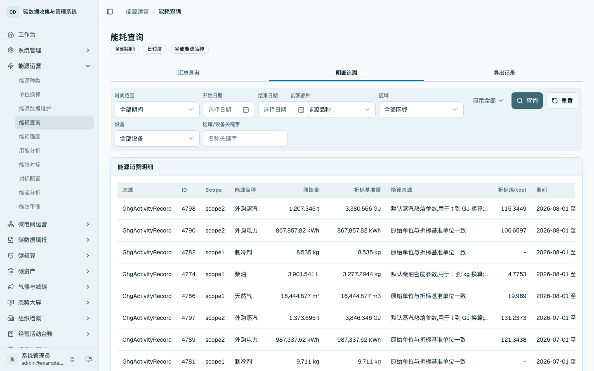
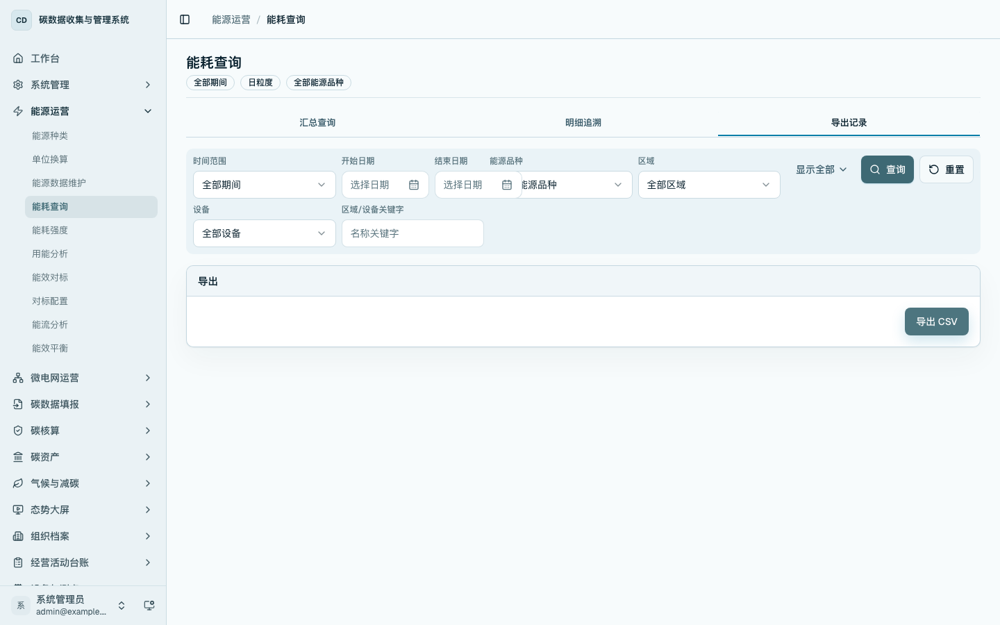

能耗查询
本章说明如何按期间、区域、设备、能源品种和汇总维度查询能源消费数据，并从汇总结果追溯到底层明细。能耗查询是能源运营分析的基础入口，用于回答“某个范围在某段时间消耗了多少能源”。
菜单位置
- 首页工作台：在
/home的「能源运营」区域点击「能耗查询」进入。 - 侧边栏：进入「能源运营 / 能耗查询」，打开
/energy/consumption。 - 数据管理入口页：进入
/platform的「能源运营」分组，点击「能耗查询」进入。
汇总查询
进入 /energy/consumption，默认打开「汇总查询」页签。页面顶部提供时间范围、开始日期、结束日期、能源品种、区域、设备、汇总维度、Scope、状态、来源和区域关键字等筛选条件。
设置条件后点击「查询」，系统按当前条件刷新记录数、原始消费量、折标煤和 CO2e 指标，并在表格中展示汇总结果。

常用查询顺序为：先选择时间范围，再选择能源品种或区域，最后按需要切换汇总维度。仓储用电分析通常先按区域查看总量，再按设备/设施查看照明、空调通风、充电设施、分拣线等对象的用能构成。
明细追溯
切换到「明细追溯」页签，查看组成汇总结果的能源消费明细。表格展示来源、来源 ID、Scope、能源品种、原始量、折标基准量、换算来源、折标煤、期间、区域/设施、状态和追溯入口。
需要核对某条汇总结果时，可在本页定位对应来源记录，再点击「打开」进入来源台账。

导出记录
切换到「导出记录」页签，点击「导出 CSV」。系统按当前筛选条件导出能源消费记录，导出文件可用于线下复核、留档和报表编制。
导出前应先确认筛选条件已经限定到需要的生产基地、期间、区域和能源品种。

操作要点
- 汇总查询用于查看能源消费结果。
- 明细追溯用于核对汇总结果对应的来源记录。
- 导出记录用于按当前筛选条件形成离线台账。
- 原始能源事实数据的新增、编辑、删除应回到「能源运营 / 能源数据维护」完成。